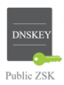

Zone-Signing Keys (ZKS)
Each zone in DNSSEC has a zone-signing key pair (ZSK):
• private key ZSK: used to signs each RRset in the zone. When signed this RRset become RRSIG
RRSIG A: Signature that bind RRset(group of Resource Records (RR) of the same type like A or AAAA) with the private key of the ZSK
dig -t A +dnssec +multiline @8.8.8.8 <domain>
The fields that RRSIG A contains are:
▪
A: Type covered, all the the resource records of this type are signed in this single RRSIG▪
13: Algorithm used to sign▪
2: number of labels in the owner name, meaning number of labels in dnstests.ovh, label is each non wildcard part, so here it is 2 (dnstests and ovh).▪
300: Original TTL▪
20201216125646: Signature expiration date▪
20201116125646: Signature inception date▪
34505: KeyTag, refer to the keypair used, in this case is the ZSK▪
cloudflare.com.: Signer’s name▪
07XWa8/6...: The Signature• public key ZSK: used to verify RRSIG (the RRset signed with private key ZSK). We can find this public key ZSK in the DNSKEY record

dig -t DNSKEY +multiline @8.8.8.8 <domain>
When a DNSSEC resolver requests a particular record type (e.g., AAAA), the name server return:
• the correspondent RRset
• the correspondent RRsig
• the DNSKEY ZSK